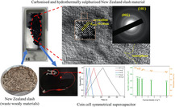
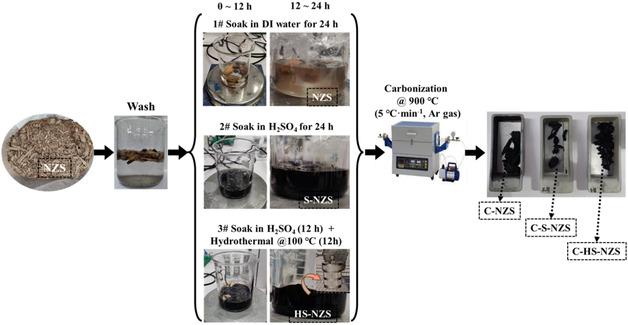
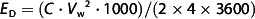
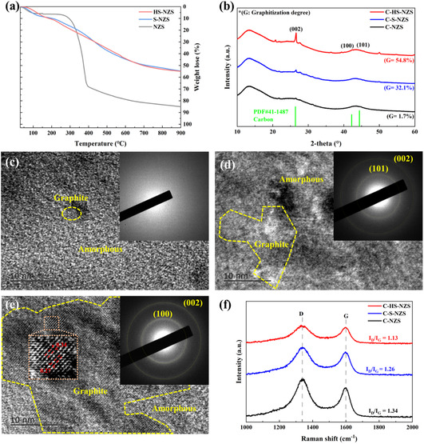
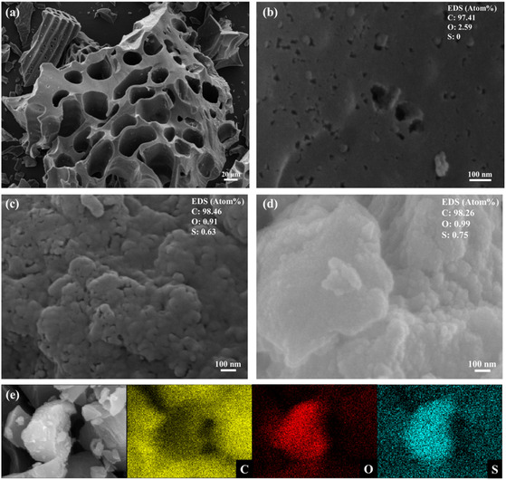
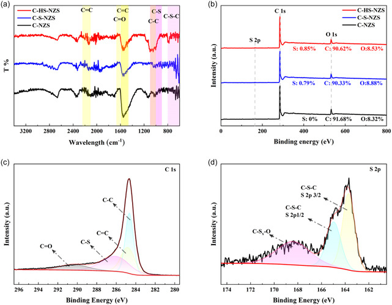
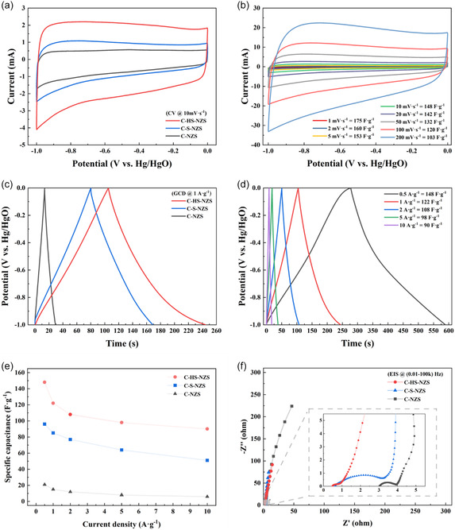
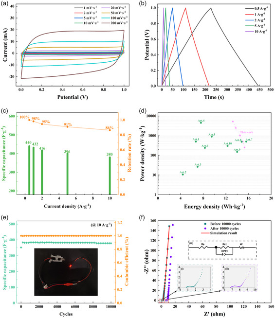
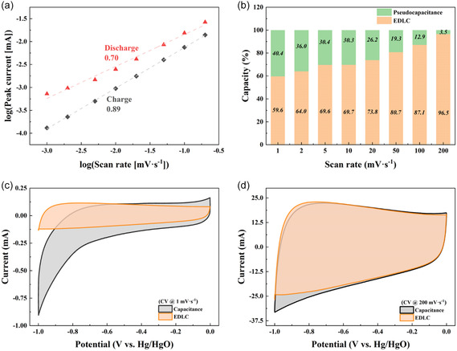

本地阅读版，依据出版社提交至PMC的原始JATS XML整理，供核对正文、图注、表格和原图。原始main.xml完整保留；此页不是出版社版式PDF。所有数字与正文冲突均保留原文，未修正或推算。实验准入状态见逐篇审核表。
Slash is a waste product generated from commercial forestry operations. In 2022, flooding slash caused devastating damage when Cyclone Gabrielle directly impacted the Hawke's Bay region of New Zealand. This study addresses the dual challenges of waste management and sustainable materials development by converting forestry slash into high‐performance carbon electrodes through an innovative in situ sulfur doping process. Building upon prior research involving waste‐derived materials, this study develops a hydrothermal sulfurization technique that transforms New Zealand slash into sulfur‐doped, highly graphitized carbon materials with excellent energy storage properties. The hydrothermally sulfurized slash‐derived electrode material (C‐HS‐New Zealand Slash (NZS)) exhibits a high specific capacitance of 148 F g− 1 at a current density of 0.5 A g− 1. A supercapacitor device assembles with the C‐HS‐NZS electrode achieves a capacitance of 440 F g− 1 at the same current density. The energy density reaches 15.3 Wh kg− 1 at a power density of 250 W kg− 1. Furthermore, the C‐HS‐NZS‐based device delivers a maximum capacitance of 384 F g− 1 and retains 360 F g− 1 after 10,000 cycles, demonstrating excellent capacity retention and long‐term electrochemical stability.
Keywords: biomass‐derived carbon, sulfur doping, supercapacitors, waste management, waste woody materials
This study transforms forestry slash waste into high‐performance sulfur‐doped carbon electrodes via hydrothermal sulfurization. The resulting material (C‐HS‐New Zealand Slash (NZS)) exhibits high capacitance (148 F g− 1) and energy density (15.3 Wh kg− 1). Supercapacitors with C‐HS‐NZS electrodes retain 360 F g− 1 after 10,000 cycles, offering a sustainable solution for waste management and energy storage.

Electrochemical energy storage (EES) devices, including supercapacitors and lithium‐ion batteries, have extensive applications across various domains of daily life.[ 1 ] As a primary component of these EES devices, electrode materials play a crucial role in determining their electrochemical performance. Due to their low cost, superior conductivity, and excellent stability, carbon‐based materials are widely adopted as electrode materials in these EES devices.[ 2 ] Currently, the primary precursors for carbon materials are derivatives from fossil fuels, such as methane, ethylene, asphalt, and polyacrylonitrile.[ 3 ] The methods employed for synthesizing carbon from these materials involve high energy consumption, and exhibit limited sustainability.[ 4 ] Consequently, substituting carbon precursors like petroleum and coal with low‐cost, abundant, and sustainable carbon sources are highly desirable.[ 3 ] The exceptional carbon precursors from biomass materials have attracted significant attention due to their abundant availability, cost‐effectiveness, and excellent sustainability.[ 5 ] Consequently, numerous researchers have successfully devised and implemented various biomass materials to synthesize carbon‐based materials. Pineapple leaves, peanut shells, soybean residue, bagasse, banana peel, and other plant waste, as well as organic waste such as cow dung, can serve as viable precursors for carbon materials.[ 6 , 7 , 8 , 9 , 10 ]
Slash is known as the commercial waste material from New Zealand's forestry industry, consisting of debris such as small branches, large trunk sections, and whole felled trees left behind after the desired timber is harvested. Since wood decomposes very slowly, these slash piles can persist for years on logged land before fully biodegrading. This has become a prominent environmental and economic concern following Cyclone Gabrielle in February 2023. This cyclone struck New Zealand, bringing heavy rainfall and strong winds, particularly devastating the North Island's regions such as Tairāwhiti (Gisborne) and Hawke's Bay.[ 11 , 12 , 13 ] During the intense rainfall brought by Cyclone Gabrielle, the large volumes of slash left in logged areas were mobilized by the surging waters. This debris quickly clogged rivers, streams, and drainage systems, leading to severe flooding. The blockage of waterways, culverts, and bridges intensified the flooding, causing extensive damage to infrastructure, including roads and homes. The mobilized slash not only posed immediate dangers by creating physical barriers and increasing flood risks but also led to longer‐term economic and logistical challenges as communities faced significant cleanup and repair costs.[ 14 , 15 , 16 ] In response to the crisis, local and national authorities, along with forestry companies, have been called to action. There is increasing advocacy for stricter regulations on forestry practices, particularly concerning the management and disposal of slash. Improved practices are being promoted, including reducing the amount of slash left behind, planning logging operations more carefully, and finding better disposal methods. Rehabilitation projects to restore affected areas and waterways are ongoing, involving community efforts and government support.[ 14 , 15 , 16 ] The growing challenges associated with forestry waste management have driven the exploration of sustainable strategies that integrate environmental remediation with technological innovation. Converting slash into high‐value carbon materials presents a viable approach to alleviating the ecological and economic issues associated with logging debris while simultaneously contributing to the advancement of next‐generation energy storage technologies. Utilizing forestry waste as a precursor for electrode materials in supercapacitors provides a dual benefit: reducing environmental waste accumulation while fostering the development of sustainable energy solutions. This valorization pathway aligns with circular economy principles by transforming an environmental liability into a valuable resource for EES, thereby creating a direct link between waste management and high‐performance energy applications.
Generally, the resultant carbon material from biomass exhibits a high surface area, making it an ideal candidate for EES electrodes. When the pyrolysis temperature is below 900 °C, biomass‐derived carbon typically exhibits characteristics of low‐graphitization and disordered hard carbon, predominantly consisting of amorphous carbon with a few short‐range ordered regions.[ 17 , 18 , 19 ] The low degree of graphitization results in poor electrical conductivity, which limits the rate capability and adversely affects the electrochemical performance in supercapacitors.[ 20 ] The most effective way to address this problem is to enhance the electrochemical performance of carbon electrodes through heteroatom doping. For supercapacitor, the main storage mechanism of carbon materials is electric double‐layer capacitor (EDLC), which stores charges electrostatically through the formation of an electric Helmholtz double layer on the surface of the electrodes.[ 21 , 22 ] The capacitance of carbon electrodes in supercapacitor can be improved by introducing pseudocapacitance. Heteroatom doping can modify the surface chemical structure, optimize the interface between carbon electrode and electrolyte, bring more active site, and is a simple method to achieve the goal of generate pseudocapacitance.[ 23 , 24 , 25 ] Sulfur‐doped carbon materials exhibit remarkable electrochemical advantages in supercapacitor applications. The incorporation of sulfur atoms effectively modulates the electronic structure of carbon materials, enhances intrinsic conductivity, reduces charge transfer resistance, and improves rate capability. Furthermore, sulfur doping introduces various functional groups (e.g., ‐SO x ) into the carbon framework, contributing additional pseudocapacitance and significantly increasing specific capacitance. The presence of polar sulfur‐containing groups also enhances the wettability of carbon materials, improves electrolyte accessibility, and accelerates ion diffusion kinetics. Additionally, sulfur doping mitigates structural degradation during charge–discharge cycles, thereby enhancing cycling stability.[ 26 , 27 , 28 ] Given these advantages, sulfur‐doped carbon materials hold significant potential for the development of high‐performance supercapacitor electrodes.
The doping methods can be categorized into ex situ and in situ processes. Ex situ doping involves introducing dopant species into a material after its formation. In contrast, in situ doping entails the direct introduction of dopant species during the synthesis or growth process of the material, occurring simultaneously with its formation. Unlike the ex situ doping process, in situ doping streamlines experimental procedures, homogeneous doping distribution, and could yield better performance due to enhanced diffusion coefficients.[ 29 ] In addition to heteroatom doping, alternative strategies have been developed to advance high‐performance supercapacitor electrodes. These include leveraging multimetal synergies in hydroxide‐based materials,[ 30 , 31 ] designing sophisticated nanostructures using metal‐organic framework templates,[ 32 ] and fabricating porous carbons derived from biomass.[ 33 ] These approaches combine sustainable material sourcing with enhanced electrochemical performance, delivering improved capacitance, rate capability, and cycling stability for next‐generation supercapacitors.
In the present research, we have designed two stages in situ sulfur doping processes to enhance the electrochemical performance of treated carbon materials from New Zealand Slash (NZS). Slash primarily consists of lignocellulosic biomass, which is rich in carbon and can be converted into porous carbon materials through processes such as pyrolysis, chemical activation, and hydrothermal carbonization. These processes break down the complex organic structure of the biomass, removing noncarbon elements and creating a highly porous carbon framework. Compared with carbon sources derived from fossil fuel, utilizing NZS as a precursor for carbon materials leverages its abundant availability and low cost, addressing both waste management and the need for sustainable carbon sources in one innovative approach. By converting this biomass waste into valuable carbon‐based materials, we can mitigate the environmental issues associated with logging debris and simultaneously contribute to the development of clean energy technologies. This study demonstrates that the pretreatment method employed can enhance the graphitization degree of the derived carbon, optimize its structural order and significantly improve electronic conductivity, thereby enhancing the overall performance of supercapacitors. The influence of in situ doping methods on the efficiency of sulfur incorporation and the resultant changes in the chemical structure of the biomass‐derived carbon material were investigated and discussed.
Inspired by previous research, we utilized concentrated sulfuric acid with two distinct sulfurization processing methods, namely soaking (S‐) and hydrothermal (HS‐) treatments, to prepare precursors from NZS, thereby obtaining S‐doped carbon in‐place.
The NZS materials were delivered by our commercial cooperator, which collected by a local forestry company in the East Coast region of New Zealand. Concentrated sulfuric acid (H2SO4) was obtained from Merck (95–97% H2SO4, analytic grade). Potassium hydroxide (≥85% KOH, ACS reagent) was obtained from Sigma–Aldrich. Nickel foams (NFs), polyvinylidene fluoride (PVDF), and 1‐methyl‐2‐pyrrolidone (NMP) were gained from MTI Corp.
Initially, 15 g of NZS were cleaned with distilled water and ethanol to remove impurities. The barks were then divided into three batches for further treatment. The first batch was immersed in distilled water and stirred for 24 h, designated as NZS. The second batch was soaked in concentrated H2SO4 for 24 h, referred to as S‐NZS (sulfurized NZS). The third batch underwent a two‐step process: It was soaked in concentrated H2SO4 for 12 h, followed by hydrothermal treatment at 100 °C in H2SO4 solution for an additional 12 h, labeled as HS‐NZS (hydrothermally sulfurized NZS).
After rinsing and drying, all samples were subjected to carbonization at 900 °C in a tube furnace under an argon atmosphere for 9 h. The resulting carbonized samples were named C‐NZS (carbonized NZS), C‐S‐NZS (carbonized S‐NZS), and C‐HS‐NZS (carbonized HS‐NZS). Figure 1 illustrates the schematic of the experimental procedure.
The experimental schematic description for the synthesis of different NZS‐derived carbon materials.

Thermogravimetric analysis (TGA, Shimadzu TA‐50) was performed to measure the carbon yield rate after various pretreatment methods, heating up to 900 °C at a rate of 10 °C min− 1 under argon gas protection. The morphology and microstructures of NZS, C‐NZS, C‐S‐NZS, and C‐HS‐NZS were analyzed using scanning electron microscopy (SEM, HITACHI SU70) and transmission electron microscopy (TEM, JEOL, JEM‐2100F). Elemental compositions were determined using the attached energy‐dispersive spectrometer (EDS, BRUKER XFlash 6‐30). The phase structure of the samples was examined by X‐ray diffraction (XRD, Rigaku Ultima IV) with Cu Kα radiation at 40 kV and 200 mA. Raman spectroscopy (HORIBA LabRAM HR Evolution) and Fourier‐transform infrared spectroscopy (FTIR, ThermoFisher Nicolet iS50) were employed to further characterize the chemical structure of the synthesized materials. Surface composition analysis was conducted using X‐ray photoelectron spectroscopy (XPS, ThermoFisher Nexsa).
A slurry for the working electrode was prepared by mixing NMP solvent with a compound of carbonized material powder and PVDF in a mass ratio of 9:1. This slurry was then applied onto NFs and subsequently dried in an oven at 60 °C for 12 h to complete the fabrication of the working electrodes. The performance of the working electrode was evaluated using a three‐electrode system. The C‐HS‐NZS samples were used as the active material in a coin‐cell‐type symmetric supercapacitor (SSC). The device was assembled with two NF discs (12 mm in diameter), each loaded with 1.2 mg of active material, and a 16 mm glass fiber separator. The average total thickness of the prepared electrode (including active material and nickel foam) was 0.101 mm.
The three‐electrode system was tested in the 6 M KOH liquid electrolyte through an electrochemical workstation (CHI 660E, USA) under ambient temperature, using a Hg/HgO electrode as the reference electrode and a 10 × 10 mm2 platinum (Pt) plate as the counter electrode. Cyclic voltammetry (CV) was performed to characterize the property of treated NZS with an applied voltage of (−1 to 0) V at a scan rate range of (1, 2, 5, 10, 20, 50, 100, and 200) mV s− 1. Galvanostatic charge–discharge (GCD) was employed between −1 and 0 V in a various current density range (0.5, 1, 2, 5, and 10 A g− 1) to study the capacity ability. Electrochemical impedance spectroscopy (EIS) was executed in a 10 mV AC signal amplitude with the frequency spectrum start from 0.01 to 100,000 Hz.
In the three‐electrode test system, the specific capacitance (C S) was calculated by CV (C sCV, F g− 1) and GCD (C sGCD, F g− 1) profiles using Equation (1) and (2), respectively.[ 34 ]
(1) (2)The specific capacitance of the coin‐cell type SSC device (C s, F g− 1) were calculated from constant current discharge duration based on Equation (3).[ 35 ]
(3)The energy density (E D, Wh kg− 1) and the power capability (P D, W kg− 1) were estimated via Equation (4) and (5).[ 35 ]
(4)
(5)In these equations, V w is the applied working voltage (V), m is the weight of active materials coated on NFs (g), m t is the total weight of the active materials in two electrodes, v s is the applied potential scanning rate (V s− 1), and the ∫|i|dV w (i is the instantaneous discharge current (A) at a given potential) is the area of CV curve at the specific scanning rate. I d is the constant discharge current density (A g− 1), td is the Galvanostatic discharge duration (s).
Thermogravimetric analysis was initially performed to measure the carbon yield rate after various pre‐treatment methods, with the results presented in Figure 2a. The initial ≈15% mass reduction from room temperature to 150 °C in NZS was due to the moisture evaporation. Subsequently, significant volatilization of volatile compounds occurred between 150 and 400 °C, with a corresponding mass reduction of about 70%, facilitating the formation of carbon. The TGA curve of NZS demonstrated thermal stabilization above 800 °C, maintaining ≈15% residual mass up to 900 °C. In contrast, the TGA curves for S‐NZS and HS‐NZS, which did not undergo moisture volatilization in the inert gas atmosphere, showed a residual mass of around 45% at 900 °C due to the sulfurization pretreatment. During sulfuric acid treatment, the slash materials undergoes dehydration and condensation, resulting in a carbon precursor that facilitates the formation of an ordered carbon structure incorporating sulfur atoms.[ 36 ] Notably, variations in the sulfurization process did not influence the yield rate. The XRD patterns in Figure 2b suggest that the samples carbonized at 900 °C under inert gas protection are carbon materials, as indicated by the clearly defined C diffraction peaks (PDF No. 41‐1487). The sharp and intense diffraction peaks of C‐S‐NZS and C‐HS‐NZS near 26° indicate a highly ordered graphitic structure, whereas the NZS sample exhibits an amorphous phase. Notably, the 2‐theta positions of C‐S‐NZS and C‐HS‐NZS are slightly shifted compared to the standard reference, suggesting possible lattice distortion, which may be attributed to sulfur doping. However, further characterization (e.g., XPS) is necessary to confirm the incorporation of sulfur into the carbon structure. In addition, NZS materials sulfurized using different methods exhibit a higher degree of graphitization compared to NZS without any precarbonization treatment. As shown in Figure 2b, the C‐HS‐NZS material shows the highest degree of graphitization about 54.8%.
a) TGA results of NZS, S‐NZS, and HS‐NZS; b) XRD spectra of C‐NZS, C‐S‐NZS, and C‐HS‐NZS. HR‐TEM and SAED images of c) C‐NZS, d) C‐S‐NZS, and e) C‐HS‐NZS. f) Raman spectra of C‐NZS, C‐S‐NZS, and C‐HS‐NZS.

High‐resolution TEM (HRTEM) images (Figure 2c–e) and the selected area electron diffraction (SAED) patterns (inset in Figure 2c–e) support the XRD results, confirming the amorphous characteristics of C‐NZS sample. Both C‐S‐NZS and C‐HS‐NZS exhibit graphitic carbon features (Figure 2d,e). Additionally, the hydrothermal sulfurization‐treated sample (C‐HS‐NZS) exhibits a highly crystalline graphitic structure, with distinct (002) and (101) diffraction rings visible in the SAED pattern and HRTEM lattice images (Figure 2e). Figure 2f presents the Raman spectra of carbonized NZS subjected to different pretreatments. The spectra exhibit characteristic carbon material peaks of the D band at ≈1330 cm− 1 (indicative of amorphous carbon) and the G band at ≈1600 cm− 1 (representative of graphitic carbon). The D band is associated with defects in the carbon atomic lattice, while the G band corresponds to the in‐plane stretching vibrations of sp2 hybridized carbon atoms.[ 37 ] The intensity ratios (I D /I G) of the peaks for the biomass‐derived carbons from different pretreatment processes are 1.34, 1.26, and 1.13, respectively. This decreasing trend suggests that sulfurization facilitates the formation of graphitic structures, as indicated by the improved structural order. However, the I D /I G values remaining above 1 indicate that the sulfurization process simultaneously introduces additional structural defects, likely due to lattice distortions induced by sulfur doping.
Figure 3 illustrates the growth morphology of NZS, C‐NZS, C‐S‐NZS, and C‐HS‐NZS samples characterized by a SEM/EDS. The raw NZS show a large particle of macroscopic size with many pores as given in Figure 3a. Following carbonization, the untreated NZS largely retained the morphology of raw NZS. However, some porosity was introduced due to the thermal treatment process. The C‐S‐NZS and C‐HS‐NZS samples that underwent sulfurization experienced a degradation of their original morphology, forming an aggregated morphology of microscopic spheroidal particles without obvious size differences (Figure 3c,d). The EDS mapping images of C‐HS‐NZS (Figure 3e) display a comparatively homogeneous allocation of C, O, and S elements, which proves that S atoms were doped into the C‐HS‐NZS sample successfully.
SEM images and EDS results of a) raw NZS, b) C‐NZS, c) C‐S‐NZS, and d) C‐HS‐NZS. e) EDS mapping of C, O, and S of C‐HS‐NZS.

FT‐IR analysis is applied to confirm the chemical structure of NZS‐derived carbons by characteristic peaks in the spectrum shown in Figure 4a. Bands observed between 1600 and 1400 cm− 1 are attributed to the C=C stretching vibrations and phenylene conjugated C=C vibrations. Additionally, typical bands associated with carbonyl and hydroxyl groups appear near 2200 cm− 1. The FTIR bands observed at 1650, 1560, and 1150 cm− 1 are corresponding to C=O, C=C, and C—S bonds, separately.[ 38 ] The elemental analysis of synthesized carbon materials and the chemical architecture of the C‐HS‐NZS were determined by XPS analysis. The S element in the C‐S‐NZS and C‐HS‐NZS were clearly observed in the XPS all survey of Figure 4b. Figure 4b also shows the contents of S, C, and O (at%) in carbonized samples. The element presence matches to the EDS results, showing that the C‐NZS sample does not contain S and C‐HS‐NZS has the largest S content, but slightly more than C‐S‐NZS about 0.06%. This means that although sulfuration could introduce S into carbon efficiently, different sulfurization methods do not affect S‐doping amount obviously. Figure 4c,d shows the subsequent fitting of high‐resolution C1s and S2p spectrum of C‐HS‐NZS. The C1s spectrum is deconvoluted into four peaks at 284.8, 285.2, 286.1, and 290.4 eV, corresponding to sp2‐hybridized (C=C) and sp3‐hybridized (C—C) carbon, C—S, and C=O, respectively.[ 39 ] In the high‐resolution S2p spectrum, the peaks at 163.7 and 164.9 eV are attributed to thiophene‐like sulfur (C–S–C), while the peak at 168.4 eV corresponds to oxidized sulfur species (C–SO x –C, x = 2–4). These results suggest that sulfur is incorporated into the carbon framework primarily through C—S covalent bonds.[ 40 ]
a) FTIR spectra of C‐NZS, C‐S‐NZS, and C‐HS‐NZS. b) XPS all survey, c) C1s of C‐HS‐NZS, and d) S2p of C‐HS‐NZS.

The XRD, XPS, and HRTEM analyses collectively indicate a dual effect of sulfurization: the enhancement of graphitization alongside the retention of a certain degree of structural disorder. This is consistent with the XRD results, which reveal increased crystallinity as well as peak shifts that suggest lattice strain. The hydrothermally sulfurized slash‐derived materials (C‐HS‐NZS) exhibit a high degree of graphitization, attributed primarily to two factors. First, sulfur doping serves both catalytic and structural roles during the carbonization process. Sulfur facilitates the transformation of disordered carbon into more ordered graphite by lowering the activation energy required for atomic rearrangement. Due to its similar electronegativity to carbon (2.58 for sulfur vs. 2.55 for carbon), sulfur can effectively participate in the bond‐breaking and reforming processes. These reactions generate active sites that promote the alignment of carbon layers into graphitic domains.[ 28 ] The proposed mechanism involves the formation of intermediate sulfur–carbon complexes that stabilize transition states during pyrolysis, thus accelerating the kinetics of graphitization.[ 41 ] Second, at carbonization temperatures around 900 °C, sulfur atoms tend to incorporate into the carbon lattice, forming stable thiophene‐like structures (C—S—C bonds) and other sulfur‐containing functional groups. Although these dopants initially introduce structural defects, they also act as nucleation sites that facilitate the formation of graphitic domains during high‐temperature annealing.[ 42 , 43 , 44 ]
Figure 5a shows the CV curves for C‐NZS, C‐S‐NZS, and C‐HS‐NZS at a sweep rate of 10 mV s− 1, exhibiting a nearly rectangular shape between −1 and 0 V, characteristic of classical EDLC storage behavior. Typically, a larger area enclosed by the CV curve at a constant scanning rate correlates with an increased specific capacitance of the electrode material based on the Equation (1). The C‐HS‐NZS sample had the highest response current, and its rectangular area was the largest one so that C‐HS‐NZS had a higher specific capacitance compare to C‐NZS and C‐S‐NZS. The CV performance of C‐HS‐NZS samples was tested at a scan rate of 1–200 mV s− 1 (Figure 5b), showing the capacitance of 175 F g− 1 using the scanning speed of 1 mV s− 1. CV curves of C‐HS‐NZS has the similar rectangular shapes at different scan rates, which means the sample has an excellent rate capability. The capacitive performance of carbonized NZS materials was further evaluated by GCD measurement. Figure 5c is the GCD graphs of NZS‐derived carbon electrodes at the current density of 1 A g− 1, showing nearly isosceles triangular shapes. This indicates that carbonized NZS electrodes store energy through the double‐layer capacitor mechanism. Under a fixed current density, sulfurized carbon materials notably exhibit longer charge–discharge times compared to untreated carbon materials, suggesting higher capacitance in the sulfurized samples.
The three‐electrode system electrochemical performance of carbonized NZS samples: a) CV curves of C‐NZS, C‐S‐NZS, and C‐HS‐NZS at 10 mV s− 1; b) CV curves of C‐HS‐NZS at different scanning rates; c) GCD curves of C‐NZS, C‐S‐NZS, and C‐HS‐NZS at 1 A g− 1; d) GCD curves of C‐HS‐NZS at various current densities; e) specific capacitance of C‐NZS, C‐S‐NZS, and C‐HS‐NZS at diverse current densities; and f) Nyquist plots of C‐NZS, C‐S‐NZS, and C‐HS‐NZS electrodes.

GCD traces of the C‐HS‐NZS sample were then further evaluated at various current densities, Figure 5d. The C‐HS‐NZS sample shows a high specific capacitance of 148 F g− 1 at 0.5 A g− 1, much higher than that of commercial active carbon (≈100 F g− 1).[ 45 , 46 , 47 ] Moreover, Figure 5e shows the specific capacitance change depend on different current densities, both C‐S‐NZS and C‐HS‐NZS have a better capacitance performance than C‐NZS, and evidence of sulfurization treatment can improve the carbon materials performance. Especially, the synthesized product C‐HS‐NZS still retain a high value of 98 F g− 1 (≈66% capacitance to the highest value) and 90 F g− 1 (≈61% retention) at a high current density of 5 and 10 A g− 1, respectively, which could be attributed to its high graphitization degree and pseudocapacitance provided by S doping.
EIS analysis was performed to examine the resistance of all carbonized NZS electrodes, with the results presented as a Nyquist plot in Figure 5f. The semisphere corresponds to the hindrance in ionic charge transport that arises between the electrolyte and the electrode. The intercept on the Z′ axis matches to the internal resistance (R S), and the radial length of the half sphere means charge transfer resistance (R ct).[ 48 ] EIS curves show that the R S of the electrochemical systems are 0.6, 0.8, and 3 Ω, when carbonized samples are used as the electrode material separately, which corresponding to all carbonized samples demonstrate a very small IR drop at the current density of 1 A g− 1. The specific R ct value of the C‐HS‐NZS electrode is the lowest among three samples, which means that the C‐HS‐NZS electrode has the lowest equivalent series resistance and the fastest diffusion speed mainly due to its higher graphitization degree.
To further explain the contribution of C and doped heteroatoms S to the capacitance and pseudocapacitance of the C‐HS‐NZS, we analyzed electrode kinetics across various scan rates. In the cyclic voltammetry results, the current (I/mA) at a specific potential is proportional to the scan rate v, following a power‐law relationship as shown in Equation (6) and (7). The results illustrate scan rates generated higher currents due to enhanced electron transfer, as evidenced by the linear log‐log plot of peak current versus scan rate in Figure 7a.[ 49 ] In this study, higher scan rates yielded enhanced currents owing to the greater number of electrons transferred, as revealed by the log (peak current) versus log (scan rate) plot (Figure 6a). Converting Equation (6) into a logarithmic form yields Equation (7), a linear relationship, where the slope represents a constant b value (Figure 6a). Notably, the charge and discharge peak currents were similar, with b values of 0.89 and 0.70, respectively, approximating the value for an ideal capacitor (b = 1). This suggests that the CV‐derived currents are due to a mix of electric double‐layer capacitance (EDLC) and surface pseudocapacitance.[ 50 , 51 , 52 ]
(6) (7) (8)Electrochemical performances of the C‐HS‐NZS fabricated coin cell SSC: a) CV curves under various sweep speeds, b) GCD curves at diverse current densities, c) specific capacitance and capacitance retention percentage based at different current densities, d) Ragone plot of this work and references, e) specific capacitance change and coulombic efficient development during 10,000 cycles stability test and lightening red LED (inner); and f) Nyquist plots before and after 10,000 cycles and the equivalent circuit.

a) Plot of log (peak current) versus log (scan rate) based on the CV results for C‐HS‐NZS; b) contributions of EDLC and pseudocapacitance to total current generated by C‐HS‐NZS; c) the capacitive contribution at 1 mV s− 1; and d) the capacitive contribution at 200 mV s− 1.

To further investigate the charge storage mechanisms, we deconstructed the CV‐derived current to separate EDLC from pseudocapacitive contributions using Equation (8).[ 53 ] Sulfur atoms enhance both surface‐controlled and diffusion‐controlled capacitance component. The constants k 1 and k 2 in Equation (8), which are the slope and intercept of the plot versus , represent EDLC and pseudocapacitive contributions, respectively. Analysis of these contributions (Figure 6b) shows that as the scan rate increased from 1 mV s− 1 (Figure 6c) to 200 mV s− 1 (Figure 6d), the pseudocapacitance share declined from 40.4% to 3.5%, while the EDLC share rose from 59.6% to 96.5%. This scan rate dependency indicates how ion flow and accumulation affect the charge storage mechanism: At low scan rates, ions move more slowly, facilitating faradaic reactions; at high scan rates, ions reach the electrode surface rapidly, enhancing surface‐based faradaic reactions.[ 54 ]
Overall, the excellent capacitive behavior of C‐HS‐NZS electrode can be credited to the high graphitization degree of S‐doped carbon materials, which facilitates the electrolyte diffusing on the electrode surface and provides a place for the formation of the double‐layer capacitance. Hydrothermal sulfurization treatment leads to a higher graphitization and a more ordered carbon structure, which improves the conductivity and accelerating the electron transfer on the electrode surface. The S atoms doping in the carbon lattice can provide Faradaic pseudocapacitance together with residual oxygen functional groups, which is beneficial for the specific capacitance of electrode.[ 55 , 56 ] Additionally, the variation in specific capacity observed between the samples with similar S‐doping levels, C‐S‐NZS and C‐HS‐NZS, can be attributed to a greater graphitization.
The coin cell‐type symmetric supercapacitor is assembled by using the C‐HS‐NZS electrode and a 6 M KOH aqueous electrolyte with an electrochemical stability operation voltage of 0 to 1 V (Figure 7 ). The quasirectangular CV curve at varied scanning speeds (1–200 mV s− 1) in Figure 7a and the GCD curve in Figure 7b at different current densities (0.5, 1, 2, 5, and 10 A g− 1) approximating the isosceles triangle exhibit outstanding rate performance with the main energy storage mechanism of double‐layer capacitance. Figure 7c summarizes the capacitance changes at diverse current densities. Its specific capacitance was 440 F g− 1 at 0.5 A g− 1 and kept at 380 F g− 1 about 86% capacity retention at a high current density of 10 A g− 1.
Figure 7d shows the Ragone plots (energy density and power density, calculated by Equation (4) and (5)) by comparing the fabricated supercapacitor with previously reported supercapacitors depend on biomass‐derived carbon electrodes, showing promising for energy storage applications. The power density of the SSC based on C‐HS‐NZS electrodes is 250 W kg− 1 at an energy density of 15.3 Wh kg− 1. When the current density increased to 10 A g− 1, the energy density is still as high as 13.2 Wh kg− 1 at a power density of 5.3 kW kg− 1. The Ragone Plots demonstrating this fabricated SSC is comparable with the previously reported supercapacitors based on other biomass derived carbon materials, as illustrated in Table 1 .
Comparison table for this work and references.
| Current density [A g− 1] | Specific capacitance [F g− 1] | Power density [W kg− 1] | Energy density [Wh kg− 1] | References | |
|---|---|---|---|---|---|
| This work | 0.5 | 440 | 250 | 15.3 | – |
| 10 | 380 | 5277 | 13.2 | ||
| Pineapple leaf (Art. 1) | 1 | 127 | 10.59 | 4.4 | [6] |
| Lotus calyx (Art. 2) | 1 | 223 | 500 | 6.7 | [60] |
| Coconut shell (Art. 3) | 0.25 | 246 | 4500 | 7.6 | [61] |
| Bones (Art. 4) | 1 | 302 | 300 | 7 | [62] |
| Soybean milk (Art. 5) | 1 | 21.2 | 898 | 9.5 | [63] |
| Wheat (Art. 6) | 0.5 | 350 | 240 | 8.3 | [64] |
| Rose flowers (Art. 7) | 1 | 350 | 499 | 15.6 | [65] |
| Perilla‐frutescens (Art. 8) | 0.5 | 270 | 490 | 14.8 | [66] |
| Rice (Art. 9) | 1 | 352 | 150 | 14 | [67] |
| Kochia (Art. 10) | 1 | 284 | 300 | 12.3 | [68] |
The SSC assembled from C‐HS‐NZS electrodes also exhibit a good stability with the highest capacitance of 384 F g− 1 and a retention of 360 F g− 1 after 10,000 cycles. The coulombic efficiency close to 100% under a high current density in long duration (Figure 7e), as well as the two pieces of coin cell supercapacitors can drive the red light‐emitting diode (LED) lightening 16 s as the inner picture shown in Figure 7e. Nyquist plots in Figure 7f were obtained prior to (include inner (i)) and following (include inner (ii)) 10,000 GCD stability cycles and analyzed using the appropriate equivalent circuit models (inner (iii)). In the high‐frequency area, the Nyquist plot initiates at a low value and features a semicircle with a small diameter, indicating a low solution resistance (R s) and minimal charge transfer resistance (R ct). These are distinct and raised from the intrinsic resistance of the electrode materials, ionic resistance of electrolyte, and contact resistance at the interface between the electrode and the current collector.[ 57 ] In the low‐frequency zone, a line with steep slope was observed, signifying excellent electrochemical double‐layer capacitor performance. The slope of this line is characterized as Warburg impedance (W), indicative of ion diffusion speed.[ 58 ] Using the equivalent circuit (inner ii) and data (R s = 0.6 Ω, R ct = 0.8 Ω) to simulate EIS result, a well fitted curve can be obtained.
In the equivalent circuit model (constant‐phase element) is incorporated to account for the inhomogeneity, nonlinearity, and potential variation within the system. This component is essential for accurately modeling the electrochemical behavior when ideal capacitive behavior is not observed.[ 59 ] The Nyquist plots of after 10,000 cycles shows almost the same patterns. A small semicircle (R ct = 1 Ω) in the high‐frequency zone, a close to vertical straight‐line portion in the low‐frequency zone, and a higher start‐point (R s = 6.8 Ω) come from the electrolyte concentration change and unstable properties of the electrode materials in the long testing time with high current density. Therefore, the notably low values of R s and R ct contribute positively to a high capacitance and extended cycle life of the C‐HS‐NZS electrode, enhancing their suitability for high‐performance supercapacitors.
This work in situ successfully synthesized S‐doped carbon derived from NZS through different sulfurization processes. Sulfurization process can improve the carbon yield rate; and the hydrothermal sulfurization treatment boosts the graphitization degree of this biomass‐derived carbon and, meanwhile, introduces sulfuric atoms into carbon frame. Due to the high graphitization, C‐HS‐NZS electrode material achieves outstanding capacitances of 175 F g− 1 when the scanning rate is 1 mV s− 1, or 148 F g− 1 at the current density of 0.5 A g− 1, and a superior inner resistance of 0.6 Ω. The device assembled by the C‐HS‐NZS electrode has an excellent rate performance and outstanding storage capacity of 440 F g− 1 at 0.5 A g− 1. Moreover, the symmetric supercapacitor device assembled with the C‐HS‐NZS electrode exhibits a high capacitance retention of 86% at 10 A g− 1. The energy density can reach 15.3 Wh kg− 1 when power density is 250 W kg− 1. After 10,000 cycles GCD test under a high current density of 10 A g− 1, the coin cell symmetrical supercapacitor of C‐HS‐NZS shows excellent stability with almost 100% coulombic efficient, illustrating an impressive application potential. This study demonstrates that the sulfurization‐treated carbonized NZS materials exhibit superior electrochemical performance is attributed to the sulfurization process, which promotes graphitization while simultaneously introducing heteroatom doping. Hydrothermal sulfurization treatment could improve the graphitization degree more efficiently than only soaking in H2SO4.
The authors declare no conflict of interest.
The authors would like to thank Professor Raechel Laing (University of Otago), Professor Mark P. Taylor (The University of Auckland), and the New Zealand Product Accelerator team for their discussion and continuous support for this project (Product Accelerator Industry Collaboration Funding 3731446). The New Zealand Product Accelerator, funded by the New Zealand Government, supports rapid innovation by connecting researchers and businesses to develop advanced products and technologies. Muge Ding acknowledges the scholarship from the China Scholarship Council (CSC NO.201908250016). Dr. Shanghai Wei and Prof. Wei Gao wish to thank the Ministry of Business, Innovation & Employment (MBIE), New Zealand, for the Smart Ideas Grant via project no. UOAX 2210.
Open access publishing facilitated by The University of Auckland, as part of the Wiley ‐ The University of Auckland agreement via the Council of Australian University Librarians.
The data that support the findings of this study are available from the corresponding author upon reasonable request.
1. Saini S., Chand P., Joshi A., J. Energy Storage 2021, 39, 102646.
2. Wang J., Nie P., Ding B., Dong S., Hao X., Dou H., Zhang X., J. Mater. Chem. A 2017, 5, 2411.
3. Priya D. S., Kennedy L. J., Anand G. T., Mater. Today Sustainability 2023, 21, 100320.
4. Wang L., Wang T., Hao R., Wang Y., Chemosphere 2023, 339, 139635.
5. Selvaraj A. R., Chinnadurai D., Cho I., Bak J.‐S., Prabakar K., J. Energy Storage 2022, 52, 104928.
6. Amri A., Taslim R., Taer E., J. Phys.: Conf. Ser. 2020, 1655, 012008.
7. Purkait T., Singh G., Singh M., Kumar D., Dey R. S., Sci. Rep. 2017, 7, 15239.
8. Ferrero G., Fuertes A., Sevilla M., Sci. Rep. 2015, 5, 16618.
9. Feng H., Hu H., Dong H., Xiao Y., Cai Y., Lei B., Liu Y., Zheng M., J. Power Sources 2016, 302, 164.
10. Shen F., Su J., Zhu L., Qi X., Zhang X., Cellulose 2017, 24, 2571.
11. Service N. Z. F., Slash risk management handbook. New Zealand Government, https://www.mpi.govt.nz/dmsdocument/64617‐Forestry‐slash‐risk‐management‐handbook (accessed: June 2024).
12. Council R. D., Ministerial Inquiry into Forestry Slash, https://www.ruapehudc.govt.nz/repository/libraries/id:2dyphjrmg1cxby65trfv/hierarchy/Meetings/Ruapehu%20District%20Council%20%28RDC%29/20230524/20230524%20%20Council%20Public%20Agenda%20APPROVED.pdf (accessed: May 2023).
13. Mathias S., What is slash and why is it so dangerous in bad weather? https://thespinoff.co.nz/business/15‐02‐2023/what‐is‐slash‐and‐why‐is‐it‐so‐dangerous‐in‐bad‐weather (accessed: February 2023).
14. Mayrhofer J. P., Gupta J., Environ. Sci. Policy 2016, 57, 22.
15. Orchard S., Smith E., Managing the Environmental Effects of Plantation Forestry: A Case Study in the Ngunguru Catchment, Northland, New Zealand, https://www.researchgate.net/publication/298679188_Managing_the_environmental_effects_of_plantation_forestry_a_case_study_in_the_Ngunguru_catchment_Northland_New_Zealan (accessed: December 2013).
16. Cheong J., N. Z. J. Environ. Law 2023, 27, 127.
17. Zhu W., Shen D., Xie H., J. Energy Storage 2023, 60, 106595.
18. Lu W., Cao X., Hao L., Zhou Y., Wang Y., Mater. Lett. 2020, 264, 127339.
19. Yu K., Zhu H., Qi H., Liang C., Diamond Relat. Mater. 2018, 88, 18.
20. Yan J., Wang Q., Wei T., Fan Z., Adv. Energy Mater. 2014, 4, 1300816.
21. Hossain A., Bandyopadhyay P., Guin P. S., Roy S., Appl. Mater. Today 2017, 9, 300.
22. Bokhari S., Siddique A. H., Sherrell P., Yue X., Maletira Karumbaiah K., Wei S., Ellis A., Gao W., Energy Rep. 2020, 6, 2768.
23. Zhu J., Yang J., Miao R., Yao Z., Zhuang X., Feng X., J. Mater. Chem. A 2016, 4, 2286.
24. Yang D.‐S., Bhattacharjya D., Song M. Y., Yu J.‐S., Carbon 2014, 67, 736.
25. Cha W., Kim I. Y., Lee J. M., Kim S., Ramadass K., Gopalakrishnan K., Premkumar S., Umapathy S., Vinu A., ACS Appl. Mater. Interfaces 2019, 11, 27192.
26. Kiciński W., Szala M., Bystrzejewski M., Carbon 2014, 68, 1.
27. Liang Y., Zhang W., Wu D., Ni Q. Q., Zhang M. Q., Adv. Mater. Interfaces 2018, 5, 1800430.
28. Shaheen Shah S., Abu Nayem S., Sultana N., Saleh Ahammad A., Abdul Aziz M., ChemSusChem 2022, 15, e202101282.
29. Wang L., Qin J., Bai Z., Qian H., Cao Y., Sari H. M. K., Xi Y., Shan H., Wang S., Zuo J., Small Struct. 2022, 3, 2100233.
30. Wang M., Wang S., Zhao J., Li S., Wang J., Mi J., Feng Y., Chem. Eng. J. 2024, 480, 148206.
31. Wang M., Feng Y., Zhang Y., Li S., Wu M., Xue L., Zhao J., Zhang W., Ge M., Lai Y., Appl. Surf. Sci. 2022, 596, 153582.
32. Zhao J., Wang M., Wang S., Zhang S., Wang J., Qiao X., Mi J., Ge M., Feng Y., Electrochim. Acta 2023, 464, 142920.
33. Hou H., Han L., Feng Y., Liu D., Bao W., Chang L., Wang J., J. Environ. Chem. Eng. 2023, 11, 110448.
34. Cheng J., Lu Z., Zhao X., Chen X., Liu Y., J. Power Sources 2021, 494, 229770.
35. Stoller M. D., Ruoff R. S., Energy Environ. Sci. 2010, 3, 1294.
36. Wang D.‐C., Lv J.‐Z., Zhong S., Wu Y., Liu Y., Lei S.‐N., Yu H.‐Y., Qu L., Stoddart J. F., Guo Q.‐H., Nat. Sustainability 2024, 7, 1699.
37. Ferrari A. C., Robertson J., Phys. Rev. B 2000, 61, 14095.
38. Ahamad T., Alshehri S. M., Arabian J. Chem. 2014, 7, 1140.
39. Qie L., Chen W., Xu H., Xiong X., Jiang Y., Zou F., Hu X., Xin Y., Zhang Z., Huang Y., Energy Environ. Sci. 2013, 6, 2497.
40. Ma X., Ning G., Kan Y., Ma Y., Qi C., Chen B., Li Y., Lan X., Gao J., Electrochim. Acta 2014, 150, 108.
41. Yang Z., Yao Z., Li G., Fang G., Nie H., Liu Z., Zhou X., Chen X., ACS Nano 2012, 6, 205.
42. Qian W., Sun F., Xu Y., Qiu L., Liu C., Wang S., Yan F., Energy Environ. Sci. 2014, 7, 379.
43. Jiang H., Gu J., Zheng X., Liu M., Qiu X., Wang L., Li W., Chen Z., Ji X., Li J., Energy Environ. Sci. 2019, 12, 322.
44. Liu J., Tang J., Gooding J. J., J. Mater. Chem. 2012, 22, 12435.
45. Simon P., Gogotsi Y., Nat. Mater. 2008, 7, 845.
46. Parlett C. M., Wilson K., Lee A. F., Chem. Soc. Rev. 2013, 42, 3876.
47. Zhai Y., Dou Y., Zhao D., Fulvio P. F., Mayes R. T., Dai S., Adv. Mater. 2011, 23, 4828.
48. Wang H., Xu Z., Kohandehghan A., Li Z., Cui K., Tan X., Stephenson T. J., King'ondu C. K., Holt C. M., Olsen B. C., ACS Nano 2013, 7, 5131.
49. Zhao S., Zhang X., Ma C., Liu Y., Zhang W., Zhao Y., J. Mater. Sci. 2023, 58, 7407.
50. Shao H., Lin Z., Xu K., Taberna P.‐L., Simon P., Energy Storage Mater. 2019, 18, 456.
51. Jiang Y., Liu J., Energy Environ. Mater. 2019, 2, 30.
52. Zhi L., Zhang W., Dang L., Sun J., Shi F., Xu H., Liu Z., Lei Z., J. Power Sources 2018, 387, 108.
53. Wang J., Polleux J., Lim J., Dunn B., J. Phys. Chem. C 2007, 111, 14925.
54. Wang J., Huang Y., Du X., Zhang S., Zong M., Chem. Eng. J. 2023, 464, 142741.
55. Mirzaeian M., Abbas Q., Hunt M. R., Hall P., Energies 2020, 13, 5577.
56. Sun C., Guo Z., Zhou M., Li X., Cai Z., Ge F., J. Power Sources 2021, 482, 228934.
57. Zhang S., Pan N., Adv. Energy Mater. 2015, 5, 1401401.
58. Shah S. S., Cevik E., Aziz M. A., Qahtan T. F., Bozkurt A., Yamani Z. H., Synth. Met. 2021, 277, 116765.
59. Sánchez‐Romate X. F., Del Bosque A., Artigas‐Arnaudas J., Muñoz B. K., Sánchez M., Ureña A., Electrochim. Acta 2021, 370, 137746.
60. Dhakal G., Mohapatra D., Kim Y.‐I., Lee J., Kim W. K., Shim J.‐J., Renewable Energy 2022, 189, 587.
61. Jain A., Xu C., Jayaraman S., Balasubramanian R., Lee J., Srinivasan M., Microporous Mesoporous Mater. 2015, 218, 55.
62. Niu L., Shen C., Yan L., Zhang J., Lin Y., Gong Y., Li C., Sun C. Q., Xu S., J. Colloid Interface Sci. 2019, 547, 92.
63. Yang L., Wang J., Wang S., Guan X., Guan X., Wang G., Ionics 2020, 26, 4141.
64. Xu S.‐W., Zhao Y.‐Q., Xu Y.‐X., Chen Q.‐H., Zhang G.‐Q., Xu Q.‐Q., Zhao D.‐D., Zhang X., Xu C.‐L., J. Power Sources 2018, 401, 375.
65. Khan A., Arumugam Senthil R., Pan J., Sun Y., Liu X., Batteries Supercaps 2020, 3, 731.
66. Liu B., Liu Y., Chen H., Yang M., Li H., J. Power Sources 2017, 341, 309.
67. Yuan Y., Sun Y., Liu C., Yang L., Zhao C., Coatings 2023, 13, 1236.
68. Fan K., Lei X., Zhang J., Yu T., Chen H., Liu J., Energy Technol. 2023, 11, 2201281.
The data that support the findings of this study are available from the corresponding author upon reasonable request.